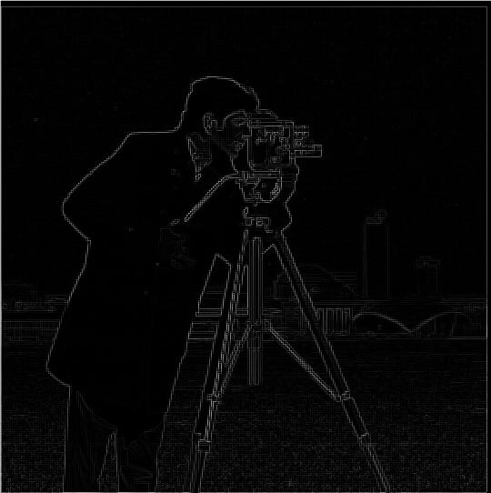
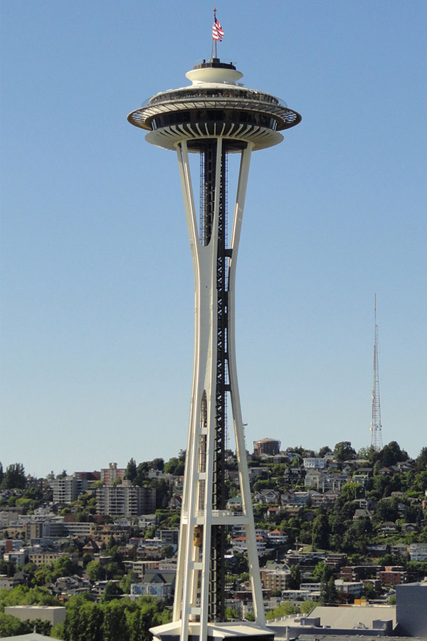
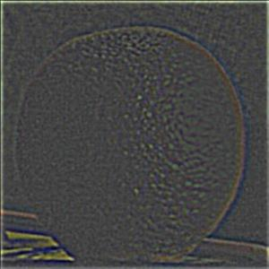
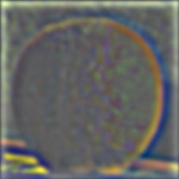

Finite Difference Operator
Let \( I \) be the input image. The gradient magnitude edge image is obtained by first convolving \( I \) with the finite difference filters \( D_x \) and \( D_y \), which capture changes in intensity in the horizontal and vertical directions, respectively. The vertical and horizontal edge information is then combined using the gradient magnitude formula \( G = \sqrt{(D_x^2 + D_y^2)} \). To finalize the edge detection, we binarize the gradient magnitude image by setting all pixel values greater than a chosen threshold \( T \) to 255 (white) and all values less than or equal to \( T \) to 0 (black). In this case the value that was determined to work well for binarization was 75. The resulting binarized edge map for the cameraman image, as well as the intermediate steps to get there are displayed below.
Cameraman

Finite Difference Horizontal

Finite Difference Vertical

Finite Difference Gradient
Finite Difference Edge
Edge Image from Finite Difference Operator
Derivative of Gaussian
As you may notice the final edge image that results from simply convolving with the finite difference operator contains a lot of noise. To compensate for this we can first blur the image by convolving with a Gaussian filter. The gradient still needs to be binarized, however, it was determined that a lower threshold of 25 works better for this case. The resulting edge image has wider edges and much less noise
Cameraman
Horizontal Edge

Vertical Edge
Gradient
Edge Image

Edge Image from Finite Difference Operator
The above output was produce by first blurring the image with one convolution and then applying a separate convolution for the finite difference operator. It is also possible to combine the gaussian and finite difference filters into one filter such that you can apply both in one convolution. The resulting edge image is very similar to when it was done separately, however, much of the computational work can be precomputed.
Single Convolution Edge Image
Image Sharpening
Images can be made to appear sharper by adding more of the high frequencies within the image. In order to accomplish this we can first apply a Gaussian filter, blurring the image and isolating the low frequencies. Then to get the high frequencies we can subtract the low frequency image from the orignal image, leaving only the high frequencies. With the high frequencies isolated we add the high frequencies back to the image, scaled by a factor of α. Below are the results of each step of the sharpening process applied to several images.
Taj Mahal

Blurred
High Frequencies
Sharpened
Tholos of Delphi

Blurred
High Frequencies

Sharpened
Church of Sacred Heart
Blurred
High Frequencies
Sharpened

Hybrid Images
A hybrid image is an image that when close up appears one way, but when viewed far away our perception of changes. In order to create a hybrid image we can take the high frequencies of one image and the low frequencies of another and overlay the two. High frequencies tend to dominate our perception if they are available, however, they become hard to see from a distance, leaving only low frequencies visible.
Derek
Nutmeg
Dermeg
Dermeg (color)
Lenny
Tiger
Tiger Lenny
Tiger Lenny (color)
The following hybrid image between the space needle and a pine tree was unsuccessful because the objects within the images differed by too much to create a convincing hybrid image effect.
Space Needle
Pine Tree
Space Pine
Space Pine (color)
Frequency Analysis
As mentioned previously, the L2 Norm did not perform well enough as a metric in the case of the image of Emir. To fix this I implemented Sobel edge detection which applies the Sobel kernels to a grayscale version of the image through convolution and computes the magnitude of the gradient at each pixel. This performed much better than L2 in this case.
Tiger
Lenny
Tiger (Low Frequencies)
Lenny (High Frequencies)
Tiger Lenny
Gaussian and Laplacian Stacks
A Gaussian stack is created by iteratively applying a Gaussian blur to the original image, with each level becoming progressively more blurred while keeping the image size consistent across all levels. In contrast, the Laplacian stack captures the differences between adjacent levels of the Gaussian stack, effectively representing the detail or frequency components lost between each level of blurring. Specifically, each level of the Laplacian stack is obtained by subtracting the next, more blurred, Gaussian level from the current one. The final level of the Laplacian stack is taken directly from the last, most blurred, Gaussian level. This method ensures that both stacks maintain the same number of levels while highlighting different aspects of the image's structure.
Orange Laplacian Stack
Level 0
Level 1
Level 2
Level 3
Level 4
Apple Laplacian Stack
Level 0
Level 1
Level 2
Level 3
Level 4
Multiresolution Blending
Multiresolution blending involves first calculating the Laplacian stacks for both input images, denoted as \(L_A\) and \(L_B\). Next, we create a Gaussian stack for the mask, \(G_R\), which allows us to achieve a smooth, multi-level feathering effect for each frequency band selected from the images. The combined Laplacian stack, \(L_S\), is then formed by using the Gaussian levels of the mask as blending weights, applying the following formula for each pixel at each level: \[ L_S(i,j) = G_R(i,j) \cdot L_A(i,j) + (1 - G_R(i,j)) \cdot L_B(i,j) \] Finally, the combined stack is collapsed by summing all its levels, producing the blended image. I found that using a more aggressive blurring strategy for the mask's Gaussian stack compared to the images' Gaussian stacks yielded better results, as it created broader blending areas, even for higher frequency details. Below are the Laplacian stacks for my additional image blends.
Solf Ball
Lennysaurus Rex
Evacado